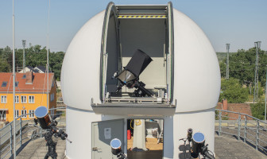
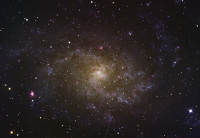
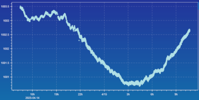
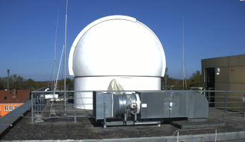

OST
Observatory

OST Wiki
Observatory description and laboratory course instructions

OST Gallery
A selection of images taken with the OST

Weather station
Weather data collected at OST

OST Camera Livefeeds
Restricted access only
OST cloud
Restricted access only
Data archive
All data ever taken with the OST